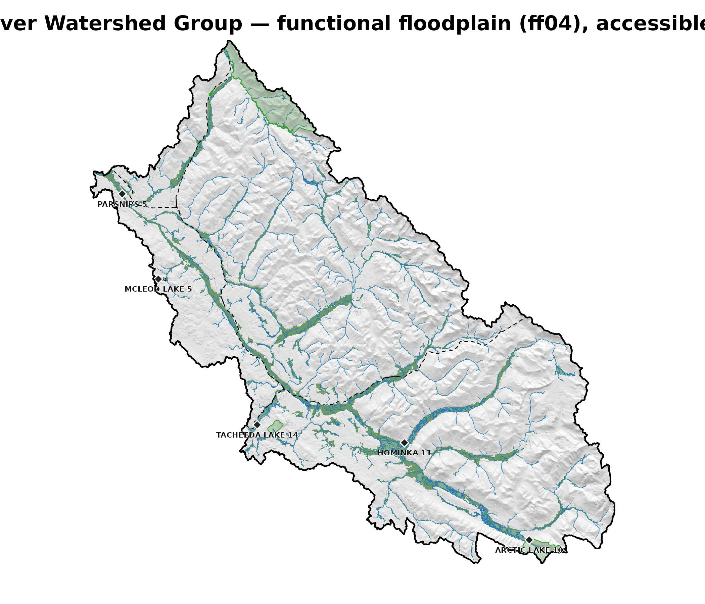
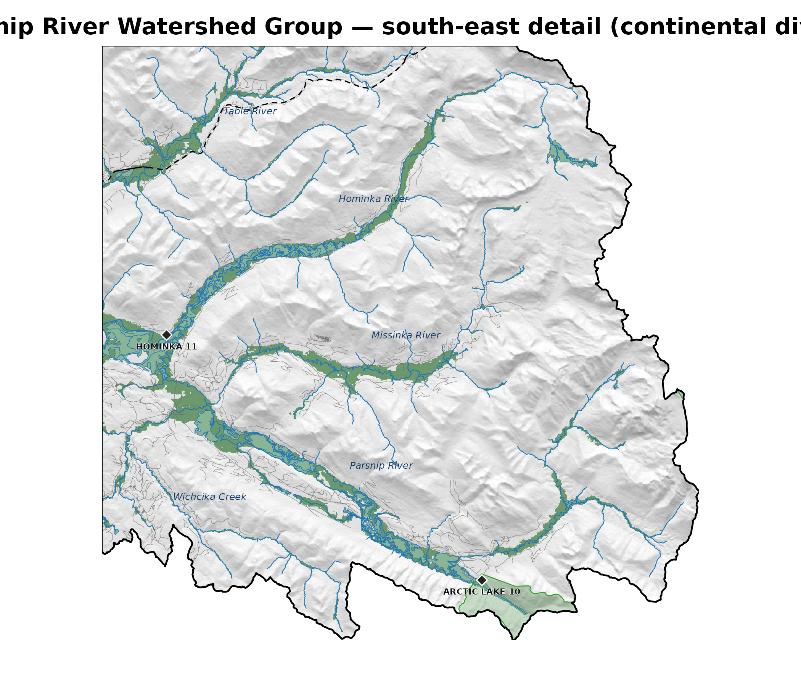

Watershed-scale floodplain delineation — Parsnip River Watershed Group
Source:vignettes/pars-floodplain.Rmd
pars-floodplain.RmdThis vignette runs the flooded pipeline on the Parsnip
River Watershed Group (PARS, 5,597 km², north-eastern BC)
and demonstrates the AOI-driven helper flooded::fl_dem_aoi().
The Parsnip River Watershed Group sits between Prince George and Mackenzie, BC. The Parsnip River flows north and enters the southern arm of Williston Reservoir at Mackenzie, joining the Peace River system. From there the drainage runs Peace → Slave → Mackenzie River, ultimately discharging to the Arctic Ocean via the Mackenzie Delta.
Why floodplains
Floodplains are the low-lying, periodically inundated lands flanking a stream — the parts of the valley that water reclaims when discharge exceeds bankfull. They store flood water and dissipate flood energy, recharge shallow groundwater, sort sediment, and host the off-channel ponds, side channels, sloughs, lakes, and wetlands that drive disproportionate ecological productivity per unit area. For salmonids in particular, floodplain habitat — slow-water margins, beaver complexes, off-channel rearing — is often the limiting factor for freshwater survival, especially through winter low-flow and high-flow refugia. Mapping the extent of the floodplain at watershed scale is therefore the first step in scoping where restoration, protection, or flood-risk planning has the most leverage.
Modelling parameters
flooded::fl_valley_confine() combines four masks —
slope, distance from stream, cost-distance through the terrain, and a
bankfull flood model — and applies morphological cleanup (closing,
hole-fill, patch removal) before returning a binary valley raster. The
algorithm is adapted from the USDA Valley Confinement
Algorithm (Nagel et al. 2014) (BlueGeo
R port by Devin Cairns, MIT) and the bcfishpass lateral
habitat assembly (Simon Norris, Apache 2.0). The bankfull flood model
follows the regional regression of Hall et al.
(2007). The parameter legend (units, defaults, citations,
ecological effect) lives in flooded::fl_params().
This run uses the ff04 scenario from
flooded::fl_scenarios() — functional floodplain,
the recurrent-inundation footprint. The active parameter values are
shown in the table below.
| parameter | value | unit | effect | source |
|---|---|---|---|---|
| flood_factor | 4 | dimensionless | Higher = deeper flood; more floodplain | (Nagel et al. 2014; Hall et al. 2007) |
| slope_threshold | 9 | percent | Higher = more valley floor included | (Nagel et al. 2014) |
| max_width | 2000 | metres | Analysis corridor width | (Nagel et al. 2014) |
| cost_threshold | 2500 | dimensionless | Higher = valley extends further up hillslopes | (Nagel et al. 2014) |
The package ships three pre-baked scenarios (table below). They
differ only in flood_factor; all other parameters are held
constant so output differences isolate the ecological signal.
| scenario_id | flood_factor | description | ecological_process | source |
|---|---|---|---|---|
| ff02 | 2 | Flood-prone width / active channel margin | Rosgen flood-prone width approximating 50-yr flood stage. Captures the zone of frequent inundation and active channel migration. | (Nagel et al. 2014) |
| ff04 | 4 | Functional floodplain | Historical floodplain extent where nutrient exchange and LWD recruitment occur. Hall et al. found ff=3 best fit on 10m DEM; ff=4 compensates for 25m TRIM vertical smoothing. | (Hall et al. 2007; Nagel et al. 2014) |
| ff06 | 6 | Valley bottom extent | Full depositional zone including terraces. Nagel et al. recommended ff=5-7 for valley bottom mapping. Wider than functional floodplain — includes areas not regularly influenced by high flows. | (Nagel et al. 2014) |
For a side-by-side comparison of all three scenarios on a smaller reach, see the valley-confinement vignette.
Cached inputs
The vignette renders against pre-computed outputs from
data-raw/wsg_vignette_data.R so it builds fast and doesn’t
touch the network or database. The hydro / context layers ship as a
single multi-layer GeoPackage and the rasters as separate GeoTIFFs
(raster tiles in GPKG would lose the continuous DTM precision and the
binary valleys semantics — wrong format for analytical layers).
Direct downloads of the cached Parsnip River Watershed Group bundle from the repo (open in QGIS or any GDAL-aware tool):
-
pars.gpkg— vectors:aoi,streams,waterbodies,floodplain,railways,roads,reserves,parks,named_streams -
pars_dem.tif— MRDEM-30 clip (Int16) -
pars_valleys.tif—fl_valley_confine()binary output
DEM
The underlying elevation data is MRDEM-30,
NRCan’s 30 m Medium-Resolution Digital Elevation Model — a single
Cloud-Optimized GeoTIFF covering all of Canada, hosted on public S3 with
no authentication required, integrated from LidarBC where lidar coverage
exists with Copernicus TanDEM-X / CDEM-derived fallback elsewhere.
flooded::fl_dem_aoi() reads it via /vsicurl/,
so the only bytes transferred are those intersecting the AOI — bandwidth
scales with the AOI, not with the COG size.
The DEM was fetched in data-raw/wsg_vignette_data.R with
a single call, passing the streams as the AOI so the crop hugs the
stream corridor (a memory-efficient pattern for large watersheds with
sparse stream networks):
dem <- flooded::fl_dem_aoi(streams, buffer = 2000)The default source = NULL resolves to the canonical
MRDEM-30 DTM /vsicurl/ URL inside
flooded::fl_dem_aoi(). buffer = 2000 extends
the AOI by 2 km in metres before crop. To override the source — e.g., to
fetch a LidarBC COG — pass
source = "/vsicurl/https://.../tile.tif".
Streams and waterbodies
Streams are habitat segments modelled as accessible to bull trout
from bcfishpass
outputs. bcfishpass runs weekly on a hosted virtual machine and
republishes the streams_bt_vw view, so the data is current
to within a week of any upstream FWA, observation, or barrier
change.
This run is built against bcfishpass v0.7.14-125-g6e9cf1c (LINEAR
model, completed 2026-05-05). The version stamp is cached at data-raw
time (see data-raw/wsg_vignette_data.R) so the vignette
renders without touching the database.
The streams query is a single fresh::frs_db_query()
call — every row in bcfishpass.streams_bt_vw is already
classified accessible (access IN (1, 2) = assessed or
modelled), so filtering to “best accessible habitat order 3+” needs no
working-table classification:
streams <- fresh::frs_db_query(conn, "
SELECT segmented_stream_id, blue_line_key, waterbody_key,
upstream_area_ha, map_upstream, channel_width, stream_order,
gradient, mapping_code, access, spawning, rearing, geom
FROM bcfishpass.streams_bt_vw
WHERE watershed_group_code = 'PARS'
AND access IN (1, 2)
AND stream_order >= 3")Waterbodies (lakes + wetlands) come from
whse_basemapping.fwa_lakes_poly and
whse_basemapping.fwa_wetlands_poly joined on
waterbody_key — only those physically anchored to the
streams above are pulled in. They feed
flooded::fl_valley_confine(waterbodies = ...) so the final
valley raster fills lake / wetland cells the gradient and cost-distance
masks would otherwise carve donut holes around.
Valley confinement
flooded::fl_valley_confine() runs the full VCA pipeline
on the cached DEM, streams, and waterbodies. On the Parsnip River
Watershed Group at 30 m (~20 Mcells) it takes a couple of minutes
single-threaded; terra::terraOptions(threads = N)
parallelises the heavy raster ops.
valleys <- flooded::fl_valley_confine(
dem = dem,
streams = streams,
field = "upstream_area_ha",
precip = flooded::fl_stream_rasterize(streams, dem, field = "map_upstream"),
waterbodies = waterbodies,
flood_factor = 4 # ff04 — functional floodplain
)
floodplain <- flooded::fl_valley_poly(valleys)Floodplain map — full WSG

Parsnip River Watershed Group unconfined valleys (green) over MRDEM-30 hillshade. Parks (light green polygon), First Nations reserves (light grey polygon, black diamond marker at centroid + label), accessible order 3+ streams in blue, lakes and wetlands in light blue, forest service / resource roads grey, railways black-dashed, watershed boundary heavy black.
Detail map — south-east corner
The full-WSG view compresses a lot of detail. Cropping to the south-eastern corner — the headwaters of the Parsnip River, where Arctic Lake Provincial Park sits on the continental divide between Arctic Ocean and Pacific Ocean drainages — shows the per-reach floodplain pattern, individual channels, lakes / wetlands, and the named First Nations reserves at full resolution. Streams just inside the Parsnip River Watershed Group here drain north via Williston Reservoir → Peace → Slave → Mackenzie to the Arctic; a short distance south of the divide, streams drain into the Fraser and out to the Pacific.

South-east corner of the Parsnip River Watershed Group at full resolution — the headwaters around Arctic Lake on the continental divide. Parks (light green), First Nations reserves (light grey polygon with black diamond marker + formal english_name label at centroid), waterbodies, valleys, named streams (italic blue labels), roads (grey), railways (black dashed).